The Biomedical Engineering Department at Purdue University in Indianapolis officially integrated with the Weldon School of Biomedical Engineering family.
Construction begins for $18M Innovation Wing for Martin C. Jischke Hall of Biomedical Engineering.
Professional Master’s Program (PMP) degree in Biomedical Engineering initiated.
MS BME/MBA dual degree program with Purdue's Krannert School of Management established.
MD/MS BME dual degree program with Indiana University School of Medicine launched.
Regulatory Science Certificate Program for Medical Devices created.
NIH T32 Interdisciplinary Training grant in Auditory Neuroscience awarded.
Center for Healthcare Engineering granted $10M by Regenstrief Foundation.
For the second year in a row, a Purdue Biomedical Engineering student team wins the Engineering World Health Design Competition.
Approval of a combined BS/MS (4+1) degree in Biomedical Engineering in West Lafayette and at Indiana University Purdue University in Indianapolis (IUPUI). .
2018
2017
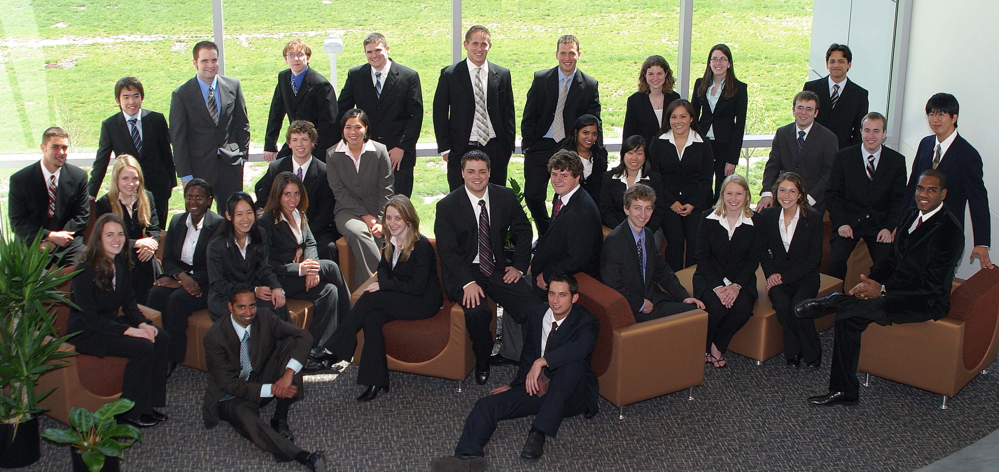
Weldon School of Biomedical Engineering Senior Class Scholarship endowed.
Grand Challenges Explorations Grant from the Bill & Melinda Gates Foundation awarded.
This year and next, Biomedical Engineering students dominate at BMES, winning Outstanding Chapter Industry Award, Outstanding Chapter Activity Award, Outstanding Chapter Officer Award, and Undergraduate Student Design and Research Award.
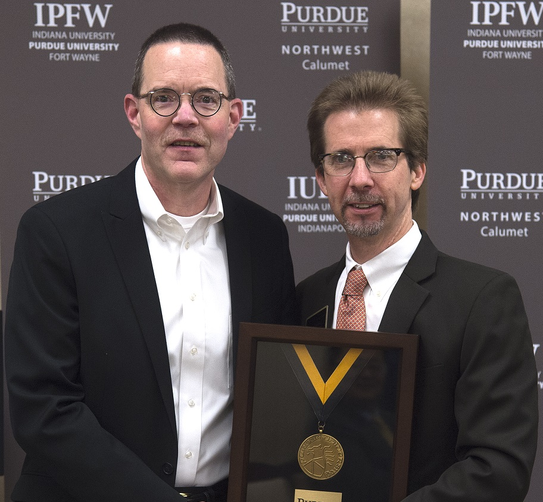
Professional Master's Program Added.
Family of orthopedics pioneer endows headship;George Wodicka appointed inaugural Dane A. Miller Head of Biomedical Engineering.
$10M NIH SPARC grant in electroceuticals awarded.
30th Biomedical Engineering faculty member hired.
Senior design team wins NIH NIBIB first prize in DEBUT challenge.
3 Biomedical Engineering faculty members inducted into National Academy of Inventors.
2016
2015
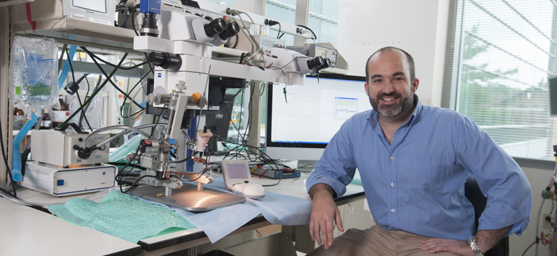
Six Biomedical Engineering faculty members promoted to full professor.
10th faculty member named Purdue University Faculty Scholar.
$5.4M DARPA grant in implantable neurostimulators awarded.
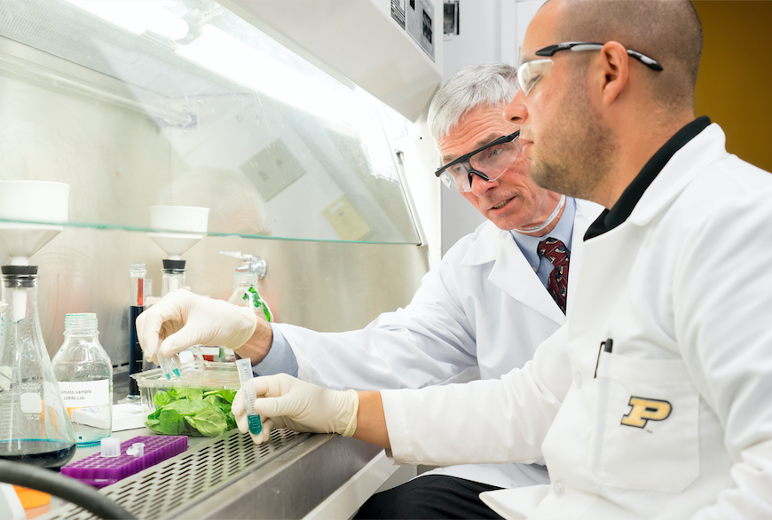
Federal and foundational research funding doubles over past year.
10th Biomedical Engineering faculty member receives NSF CAREER Award.
FDA Food Safety Challenge Grand Prize awarded.
2014
2013
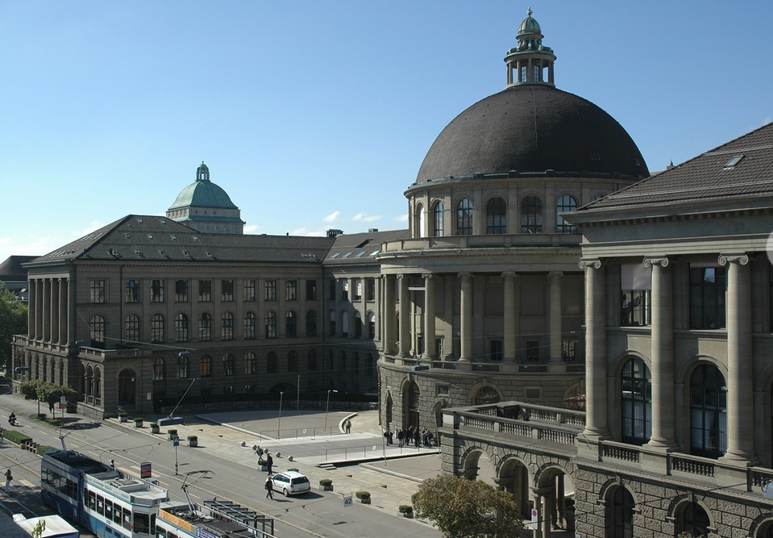
1st of three Biomedical Engineering preeminent faculty teams selected for support by Purdue College of Engineering.
NIH T32 interdisciplinary training grant for diabetes research awarded.
Study abroad programs with ETH in Switzerland and DTI Denmark launched.
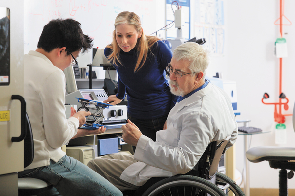
11 Biomedical Engineering faculty members elected to AIMBE College of Fellows.
Institute for Accessible Science becomes newest biomedical research center in Discovery Park.
Active US patents exceed 100, with 50 active corporate licenses..
Leslie Geddes receives the National Medal of Technology in a White House ceremony.
The new home of the Weldon School of Biomedical Engineering is dedicated.
Cook Group, Inc. endows Leslie A. Geddes Professorship.
2006
2005
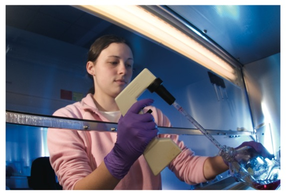
The Biomedical Entrepreneurship graduate certificate program is started in collaboration with the Krannert School of Management through the generous support of the Guidant Foundation and the C.R. Bard Foundation.
The Havel and Decker Families endow the first undergraduate scholarship at the School.
Biomedical Science graduate program with Veterinary Medicine launched.
Biomedical Engineering undergraduate industrial internship program created.
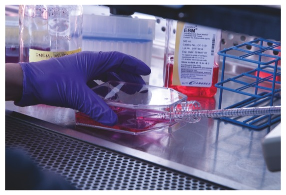
In recognition of the generosity of the Weldon family, the Purdue Board of Trustees elevates the Department of Biomedical Engineering to the Weldon School of Biomedical Engineering.
The Indiana Commission for Higher Education approved the BSBME degree in 2003. The first Freshman class was admitted in the fall of 2004 in West Lafayette and at Indiana University Purdue University in Indianapolis (IUPUI).
The Biomedical Engineering program evolved to full department status at Indiana University Purdue University in Indianapolis (IUPUI). Through the use of Commitment to Excellence and Chancellor’s Reallocation funds, five new tenuretrack positions were approved, along with resources for staff support and operating funds.
The Biomedical Engineering Department at Indiana University Purdue University in Indianapolis received a $1.9M gift from the Guidant Foundation, establishing the Thomas J Linnemeier Guidant Foundation Chair in Biomedical Engineering.
2004
2003
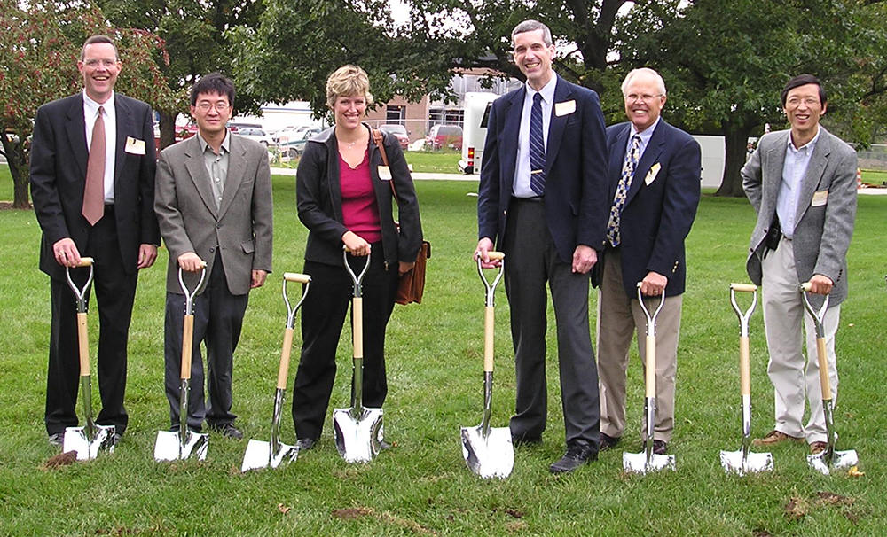
Whitaker Foundation funding for building granted Ronald W. Dollens Graduate Scholarship established by the Guidant Foundation for graduate students in biomedical engineering and pharmacy.
Groundbreaking takes places on a new biomedical engineering building.
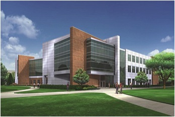
State of Indiana funding for new building and program growth secured.
2002
2001
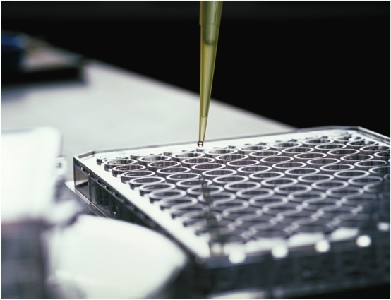
Creation of an undergraduate biomedical engineering program is approved by the Purdue Board of Trustees and the Indiana Commission for Higher Education.
Joint MD/PhD program is formed with the Indiana University School of Medicine.
First PhD presented in West Lafayette and at Indiana University Purdue University in Indianapolis (IUPUI).
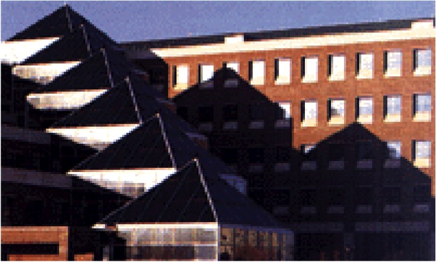
Department receives the prestigious Tony and Mary Hulman Health Achievement Award from the Indiana Public Health Foundation.
The Biomedical Engineering program cemented its status as a joint effort, with programs in orthopedic biomechanics, cardiovascular instrumentation and tissue engineering.
2000
1999
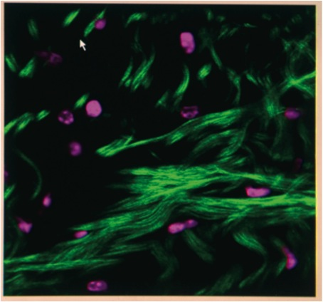
National Science Foundation IGERT grant in Therapeutic and Diagnostic Devices awarded.
First Master’s presented in West Lafayette and at Indiana University Purdue University in Indianapolis (IUPUI).
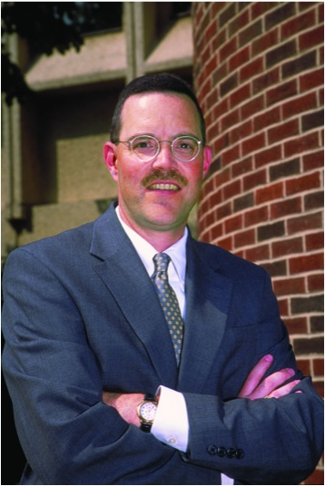
The Department of Biomedical Engineering is formed; George Wodicka named head of the new department.
Whitaker Foundation Special Award received.
1998
1996
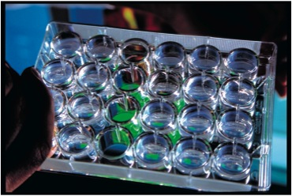
Alumni David and Stephen Grubbs fund an annual research stipend for students.
Biomedical Engineering Master’s and Graduate Programs in West Lafayette and at Indiana University Purdue University in Indianapolis (IUPUI) were approved by the Purdue Board of Trustees and sanctioned by the Indiana Commission for Higher Education, joining expertise with the medical needs for the enhancement of healthcare.
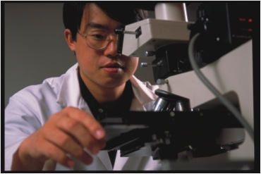
Alumnus Neal Fearnot creates the Fearnot Award to recognize the student giving the most outstanding summer seminar presentation on their research.
1992
1991
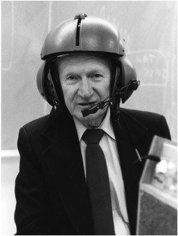
Leslie Geddes “retires” as Center Director and Showalter Professor to become the Showalter Distinguished Professor Emeritus of Biomedical Engineering.
1990
The Biomechanics and Biomaterials Research Center (BBRC) was established to foster inter-institutional research between Purdue University and Indiana University faculty.
1990
1987
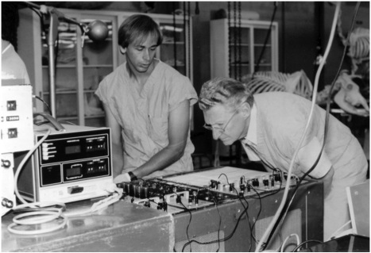
Leslie Geddes creates the Geddes-Laufman-Greatbatch Graduate Student Award for productivity and service.
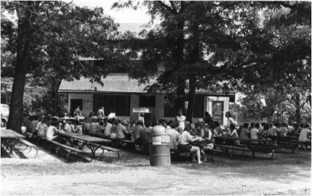
The Biomedical Engineering Center is formally renamed the William A. Hillenbrand Biomedical Engineering Center by the Purdue University Trustees.
1985
1976
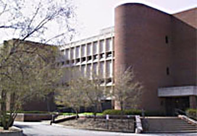
The Biomedical Engineering Center moves into the newly completed Potter Engineering Building.
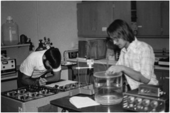
First biomedical engineering course (EE522) was developed and taught.
Norman Weldon awards first grant received by the Center, $25,000, to create the best automatic implanted cardioverter defibrillator.
1975
1974
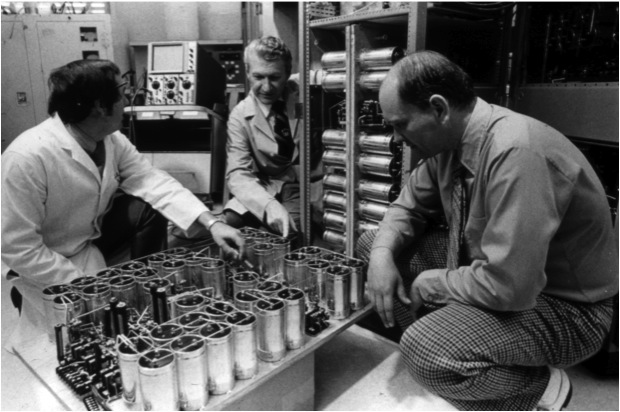
Leslie Geddes, Joe Bourland, Willis Tacker and Charles Babbs create the Biomedical Engineering Center.
Leslie Geddes named Director of the Biomedical Engineering Center and the Showalter Professor of Biomedical Engineering.
Offices and laboratories were in the basement of the Electrical Engineering Building.
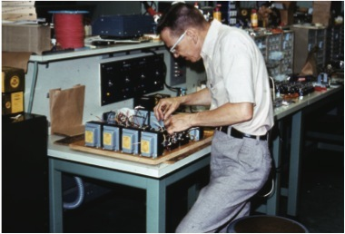
William Hillenbrand anonymously donates $500,000 to establish biomedical engineering research at Purdue.
Grace Showalter endows the Showalter Distinguished Professorship of Biomedical Engineering.